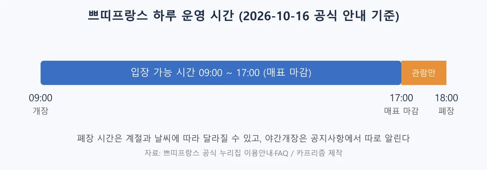
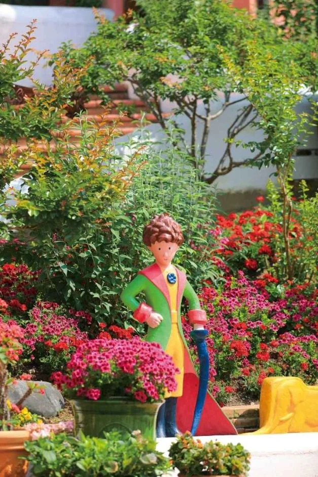
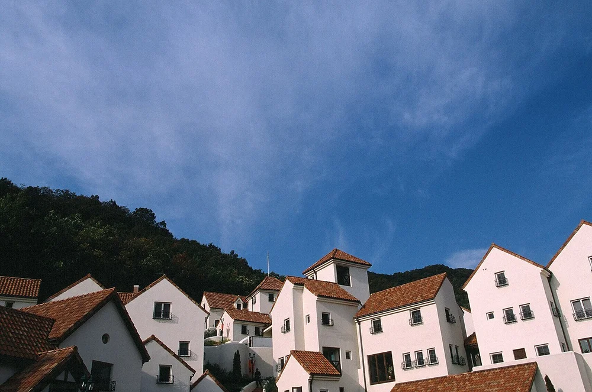
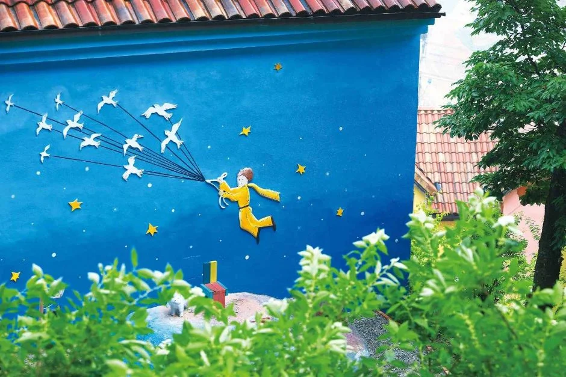
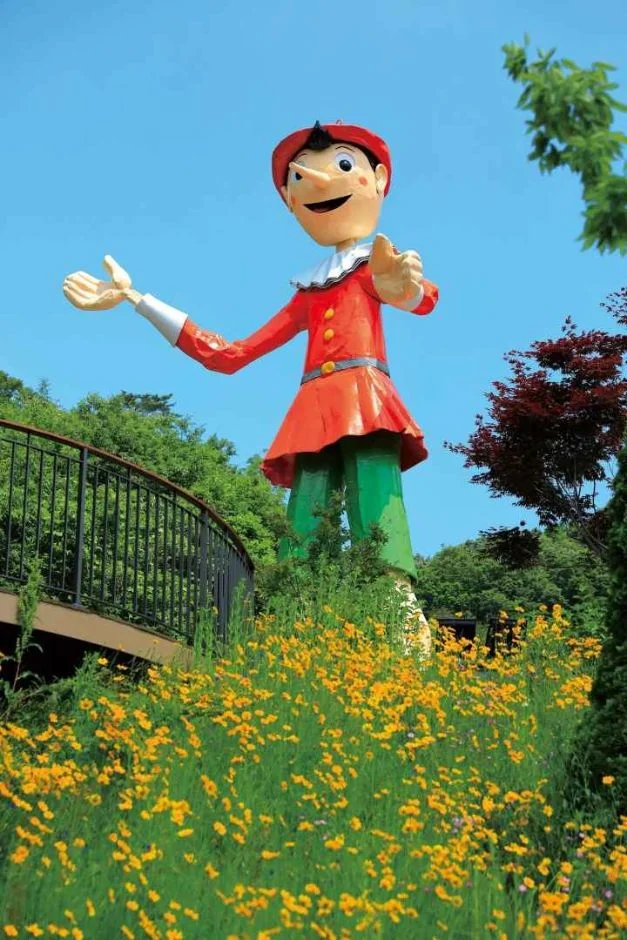
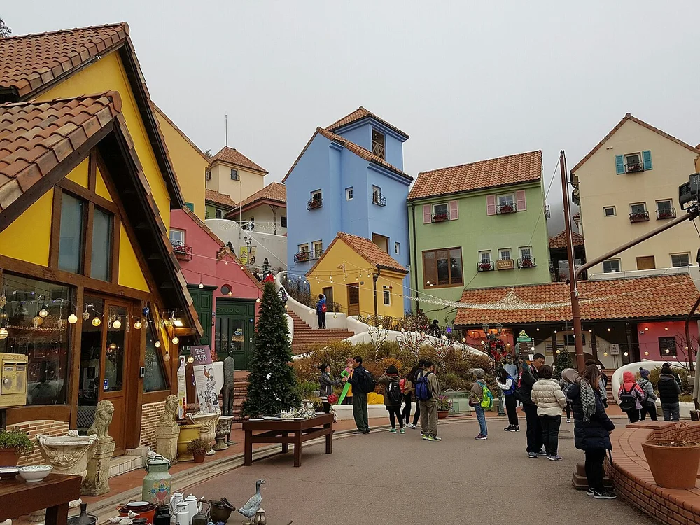
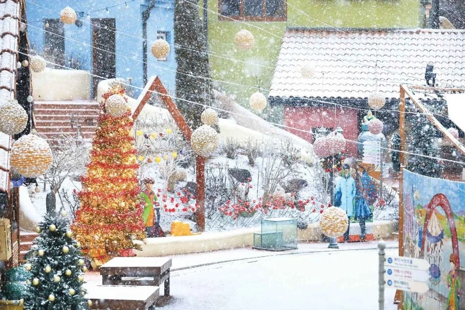
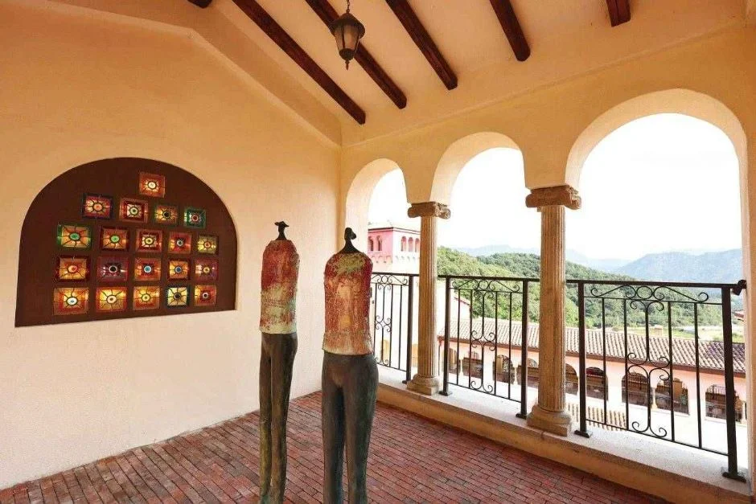
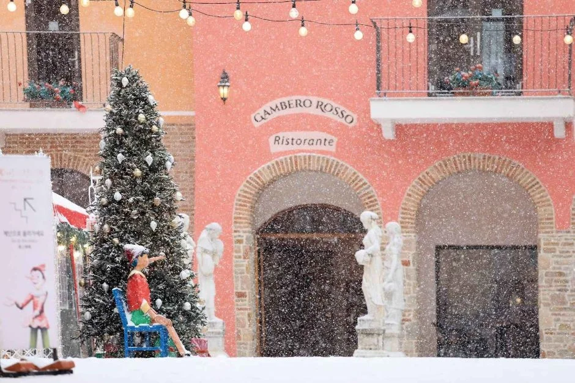

▲ 알록달록한 건물이 산자락에 모여 있는 쁘띠프랑스 일대 전경. 나뭇잎이 초록이라 가을 사진은 아니다. 사진=한국관광공사
"입장은 오후 5시에 끝납니다. 6시까지 문을 연다고 늦게 가면 못 들어갑니다." 2026년 10월 16일 현재, 쁘띠프랑스 공식 누리집(이용안내·자주 묻는 질문·공지사항)과 한국관광공사 TourAPI 정보를 열어 확인한 내용을 정리했다. 운영은 09:00~18:00 연중무휴이고, 공식 FAQ는 매표 마감을 오후 5시로 안내한다. 공식 이용안내 페이지에 게시된 요금표의 쁘띠프랑스 단독 입장료는 대인·청소년 12,000원, 소인 10,000원이며, 주차는 무료다. 공식 이용안내 바로가기
💡 먼저 결론
가평 청평면 호숫가 언덕에 자리한 프랑스 마을이다. 공식 누리집은 서울춘천고속도로 화도IC를 타는 자차 경로를 "서울에서 50분 소요"라고 안내한다(교통 상황에 따라 달라지는 값이다). 가을 행사로 공식 공지에서 확인된 것은 11월 14일 샹송 경연대회 본선뿐이고, 야간 조명 행사인 별빛축제는 올겨울 일정이 아직 올라오지 않았다.
1. 한눈에 보기 — 공식 자료로 확인한 것과 못 한 것
쁘띠프랑스의 주소는 경기도 가평군 청평면 호반로 1063(고성리 616-2)이다. 공식 누리집은 내비게이션에 616번지로 입력하는 편이 더 편하다고 알린다. 지금은 프랑스 마을 옆에 이탈리아마을 '피노키오와 다빈치'가 함께 운영되어 공식 명칭도 "쁘띠프랑스 & 이탈리아마을"로 바뀌어 있다. 이 기사는 쁘띠프랑스를 중심으로 다룬다.
| 항목 | 내용 | 확인 근거 |
|---|---|---|
| 운영 시간 | 09:00~18:00, 연중무휴 | 공식 이용안내·TourAPI 동일 |
| 매표 마감 | 17:00 | 공식 FAQ (공식 지도에는 "폐장 1시간 전까지 입장 가능"으로 표기) |
| 폐장 시간 | 계절과 날씨에 따라 유동적 | 공식 이용안내 |
| 입장료(쁘띠프랑스 단독) | 대인·청소년 12,000원 / 소인 10,000원 | 공식 요금표, TourAPI 동일 |
| 주차 | 무료. 무료 주차 후 통합매표소로 입장 | 공식 이용안내 |
| 반려동물 | 동반 입장 불가(이동가방 이용 시에도 제한) | 공식 FAQ |
| 금연·금주 | 전체 금연·금주 구역 | 공식 이용안내 |
| 문의 | 031-584-8200 | 공식 이용안내 |
| 올겨울 별빛축제 일정 | 확인하지 못함(공지 없음) | 공지사항에 최신 글은 2026-09-25 |
입장료 표는 이용안내 페이지에 이미지로 걸려 있고 파일 이름에 2024년 12월 표기가 들어 있다. 당시 이후 개정 공지는 공지사항에서 찾지 못했고 한국관광공사 정보와 금액이 같지만, 요금은 바뀔 수 있으니 출발 전 한 번 더 확인하는 편이 안전하다. 공식 FAQ 바로가기
2. 입장료 — 단독 12,000원, 이탈리아마을까지 묶으면 19,500원
공식 요금표(문화체험비)는 정가를 줄 그어 지우고 할인가를 표시하는 방식이다. 쁘띠프랑스 단독과 이탈리아마을 단독이 같은 금액이고, 둘을 묶은 통합이용권(Two Park Pass)이 따로 있다. 대인·청소년은 중·고등학생까지, 소인은 36개월 이상~초등학생까지다.
| 이용권 | 대인·청소년 (할인가) | 소인 (할인가) | 표시 정가(대인/소인) |
|---|---|---|---|
| 쁘띠프랑스 단독 | 12,000원 | 10,000원 | 16,000원 / 12,000원 |
| 이탈리아마을 단독 | 12,000원 | 10,000원 | 16,000원 / 12,000원 |
| 통합이용권(두 마을) | 19,500원 | 16,000원 | 32,000원 / 24,000원 |
우대 할인 대상은 가평군 주민(신분증), 경로우대(만 65세 이상, 신분증), 장애인 복지카드 소지자 본인, 국가유공자(신분증)다. FAQ는 만 65세 이상이 신분증을 보이면 2,000원 상당의 할인을 받는다고 설명하고, 복지카드 할인은 소지자 본인에 한한다고 밝힌다. 20인 이상 단체는 최소 하루 전 전화 예약을 해야 할인이 적용된다. 온라인 예약은 공식 안내에 네이버 예약 링크가 걸려 있다. 네이버 예약 바로가기
3. 운영 시간 — 17시에 매표가 끝나는 것부터 계산하자
공식 이용안내는 오전 9시부터 오후 6시까지 연중무휴로 연다고 적으면서 "폐장 시간은 계절과 날씨에 따라 유동적"이라는 주석을 달았다. 야간개장 시간은 공지사항을 보라는 안내가 따로 붙어 있다. FAQ는 매표 마감을 오후 5시로 못박았으니, 해가 짧아지는 가을엔 오후 4시 전후에 도착하는 계획이 아니라면 일정이 빠듯해진다.

▲ 공식 안내를 바탕으로 카프리즘이 그린 하루 운영 시간 도표. 카프리즘 제작 도표
| 구분 | 시간 | 비고 |
|---|---|---|
| 개장 | 09:00 | 연중무휴 |
| 매표 마감 | 17:00 | 공식 FAQ 기준 |
| 폐장 | 18:00 (유동적) | 계절·날씨에 따라 변동 |
| 카페·기프트숍 | 09:00~18:00 | 카페는 마감 30분 전까지 주문 |
| 지난 겨울 별빛축제(참고) | 입장 마감 17:30, 퇴장 마감 19:00 | 2025.12.1~2026.2.28 공지, 올해분은 미공지 |
마지막 줄은 올해 기준이 아니라 지난겨울 공지다. 야간에 조명을 즐기는 시간대가 평소와 다르다는 점을 보여 주는 사례로만 읽어야 한다.
4. 자차 경로와 주차 — 서울 기점 50분, 주차는 무료
공식 '오시는 길' 안내의 자차 경로는 서울에서 올림픽대로 미사리 방향으로 가 서울춘천고속도로에 올라 화도IC로 내린 뒤 춘천·청평 방향으로 대성리를 지나 청평댐 입구에서 고성리·호명리 방향으로 약 10km 가는 길이다. 누리집은 이 경로로 서울에서 50분이 걸린다고 적었다. 경춘국도를 타는 경우에도 청평댐 입구 삼거리에서 호명리 방면으로 우회전해 10km를 가면 된다고 설명한다. 서울양양고속도로 설악IC에서 오는 경우에는 가평대교 개통으로 서울에서의 이동 시간이 예전보다 약 15분 줄었다고 소개한다. 공식 오시는 길 바로가기
| 경로 | 공식 안내 요지 |
|---|---|
| 서울춘천고속도로 | 화도IC → 춘천·청평 방향 → 대성리 → 청평댐 입구에서 고성리·호명리 방향 10km |
| 경춘국도 | 대성리 지나 청평 못 미쳐 청평댐 입구 삼거리 → 호명리 방면 우회전 → 10km 직진 |
| 서울양양고속도로 | 설악IC 이용, 가평대교 개통으로 약 15분 단축 |
| 내비게이션 입력 | 고성리 616번지 |
주차는 공식 이용안내에 "무료주차"로 적혀 있다. 무료 주차 후 통합매표소를 통해 입장하라는 순서도 안내한다. 공식 안내도에는 정문 쪽 제1주차장과 출구 쪽 제2주차장이 표시되어 있다. 다만 주차 가능 대수와 주말 만차 여부는 공식 자료에서 확인하지 못했다. 자차를 두고 가고 싶다면 공식 '오시는 길'이 안내하는 대중교통을 쓰면 된다. 청평역이나 가평역(경춘선)에서 내려 '가평 관광지 순환버스'를 타거나, 청평역에서는 35-1번, 가평역에서는 12번 좌석버스를 이용하는 방법이다. 청평역에서 도보 10분 거리인 청평터미널에서 고성리행 시내버스를 타는 길도 있다. 도착이 늦을수록 17시 매표 마감에 걸리니 평일 오전이나 한낮에 맞춰 출발하자.

▲ 꽃밭 사이에 선 어린왕자 조형물. 쁘띠프랑스는 어린왕자를 콘셉트로 한 마을이다. 사진=한국관광공사

▲ 푸른 하늘 아래 분홍·흰색 벽의 건물이 이어진 마을 지붕. 위키미디어 커먼즈에 2013년 11월 10일 촬영으로 등록된 사진이다. 사진=정승훈(반달곰), CC BY 2.0, Wikimedia Commons
5. 마을 구성 — 어린왕자 콘셉트의 건물·공연·체험
공식 소개는 쁘띠프랑스를 "어린왕자를 콘셉트로" 만든 작은 프랑스 마을이라고 한다. 한국관광공사 개요는 '꽃과 별, 그리고 어린 왕자'를 콘셉트로 한 프랑스 문화마을이자 청소년수련시설(고성청소년수련원)을 겸한다고 설명한다. 공식 안내도에는 번호가 붙은 전시관·공원·무대가 38곳 표시되어 있다.
| 분류 | 공식 안내에 나온 곳·프로그램 |
|---|---|
| 전시관·기념관 | 생텍쥐페리 기념관, 오르골 하우스(세계 오르골 시연·설명), 프랑스 전통주택 전시관, 유럽 인형 전시관, 앤티크 도자기 전시관, 마리오네트 전시관, 갤러리 꼬뜨다쥐르 |
| 야외 공간 | 야외극장(원형극장), 분수광장, 봉쥬르 산책길, 사랑의 종탑, 에뚜알 공원, 나비공원, 쁘띠테라스, 전망대 |
| 공연 | 유럽 동화 인형극(프랑스 전통 손인형극 '기뇰'), 서커스·마임쇼, 버라이어티 퍼포먼스, 오르골 시연 |
| 체험·포토존 | 어린왕자 체험·포토존과 썰매장은 관람객 대상 상시 무료, 어린왕자 석고체험은 20인 이상 사전 예약 유료 |
| 편의시설 | 물품보관함, 수유실, 카페·매점(D동 1층, 마감 30분 전까지 주문), 기프트숍(어린왕자·피노키오 관련 상품, 오르골, 기념엽서), 베토벤바이러스 촬영지 휴게실(B동 2층, 북한강 전망, 50석) |
| 체험 | 어린왕자 체험존, 유럽전통의상체험, 마리오네트조종체험, 프로포즈의 방(공식 체험 안내 분류) |
| 숙박 | 원내 숙박시설 운영. 객실 요금은 11만~20만 원대로 안내, 숙박료에 입장권 포함, 숙박객 차량은 외부 주차장 이용 |
마을 곳곳은 드라마·예능 촬영지로도 알려져 있다. 공식 누리집은 '별에서 온 그대', '시크릿가든', '런닝맨', '봄밤' 등을 촬영지 소개 항목으로 올려 두었고, 휴게실 한 곳은 '베토벤바이러스' 촬영지라고 소개한다. 안내도 기준으로 정문 쪽 통합매표소가 1번, 출구와 제2주차장이 38번이며, 안내도 하단에는 "폐장 1시간 전까지 입장 가능"이라는 문구가 있다.
공연은 월별 시간표가 공연일정표 게시판에 날짜별로 올라온다. 10월분은 매일 게시되어 있지만 시간표가 이미지 형태라 이 기사에서는 구체 시각을 옮기지 않는다. 방문 당일 공연일정표를 보고 동선을 짜는 편이 정확하다. 공식 FAQ에 따르면 마을 안 먹거리는 커피·계절 음료와 떡볶이·어묵·우동 같은 간단한 분식 수준이다. 식사를 하려면 단체 예약 전용 식당이 따로 있을 뿐이라, 식사는 마을 밖에서 해결하는 계획이 편하다. 공식 부대시설 안내 바로가기

▲ 파란 벽에 새 떼와 어린왕자를 입체적으로 그린 벽 장식. 사진=한국관광공사

▲ 노란 꽃밭 위의 피노키오 대형 조형물. 이탈리아마을 '피노키오와 다빈치'와 같은 주제다. 사진=한국관광공사

▲ 흐린 날 늦가을 마을 광장. 위키미디어 커먼즈에 2016년 11월 15일 촬영으로 등록된 사진으로, 관람객이 모이는 광장 분위기를 가늠할 수 있다. 사진=陳 中昇, CC BY-SA 2.0, Wikimedia Commons
6. 가을·겨울 이벤트 — 확인된 것은 11월 샹송 경연대회뿐
공식 공지사항에서 올해 가을·겨울과 관련해 확인된 글은 다음과 같다. 공지사항 최신 글은 2026년 9월 25일자 '제1회 쁘띠프랑스 가을 프랑스 샹송 경연대회'다. 참가 접수는 11월 2일 오후 6시까지, 본선 진출팀 발표는 11월 9일, 본선은 11월 14일(토) 오후 2시 야외극장이다. 총상금은 200만 원이고 최우수상(1팀)은 상금 100만 원에 숙박권과 쁘띠프랑스·피노키오와 다빈치 마을 초대권이 함께 주어진다. 신청서 작성과 2분 이내 MP3 예선 음원 제출을 모두 마쳐야 접수된다. 다만 이 글은 참가자 모집 공고여서 일반 관람객의 관람 방법은 안내돼 있지 않다.
| 행사 | 일정 | 상태 |
|---|---|---|
| 제1회 가을 프랑스 샹송 경연대회 | 접수 9.24~11.2, 본선 11.14 14:00(야외극장) | 참가자 모집 공고, 일반 관람 안내는 없음 |
| 추석 특별 프로그램(낮에는 샹송, 밤에는 영화) | 2026.9.23~9.27 | 종료 |
| 피노키오&어린왕자 별빛축제(제4회) | 2025.12.1~2026.2.28 | 종료, 올겨울(제5회) 공지는 확인하지 못함 |
| 2026 한국관광공사 열린관광지 선정 프로모션 | 공지 게시일 2026.3.12 | 제목만 확인, 세부 내용은 이미지 공지라 미확인 |
| 2026 한불 수교 140주년 공식 기념사업 | 연중(공식 기념행사 프로그램 선정) | 2026.3 선정 공지, 세부 일정은 미확인 |
지난겨울 별빛축제는 12월 1일부터 2월 말까지 열렸고 입장 마감 17:30, 퇴장 마감 19:00이었다고 공지했다. 올해도 비슷한 시기에 열릴지는 알 수 없다. 겨울 일루미네이션을 보러 갈 계획이라면 11월 말 전후 공지사항을 확인하자. 참고로 공식 체험 안내는 썰매장을 관람객 대상 상시 무료 체험으로 소개하지만, 개방 시기는 확인하지 못했다.

▲ 눈 내리는 겨울 마을 골목의 트리와 장식. 지난겨울 별빛축제 시기 사진으로 보이지만 촬영 시점은 확인하지 못했다. 사진=한국관광공사
✅ 출발 전 체크
1) 17:00 매표 마감 전에 도착하기 2) 요금은 12,000원(대인·청소년)이지만 이미지 요금표이므로 전화(031-584-8200)로 재확인 3) 반려동물 동반 불가 4) 당일 공연일정표 게시판 확인 5) 겨울 별빛축제는 11월 말 공지 확인. 단풍 시기에 대한 공식 자료는 확인하지 못했다.
7. 가평 하루 코스로 이어 가기
쁘띠프랑스는 청평댐에서 남이섬 방향으로 호숫가 길을 따라 약 10km 지점에 있다고 TourAPI 개요가 설명한다. 같은 날 다른 가평 명소를 엮고 싶다면 이미 정리한 기사를 참고하자. 배를 타고 들어가는 남이섬 가을 가이드, 20개 테마정원과 가을 국화전시회를 소개한 가평 아침고요수목원, 자가용이 주차장까지만 갈 수 있는 호명호수 버스·주차 안내가 있다. 장소 사이의 이동 시간은 이번에 공식 자료로 확인하지 못했다. 쁘띠프랑스의 매표 마감이 17시라는 점을 기준으로 일정을 짜면 순서를 고르기 쉽다.

▲ 아치 기둥이 이어진 회랑과 테라스. 정확한 촬영 위치는 확인하지 못했다. 사진=한국관광공사

▲ 눈 내리는 날 트리가 놓인 유럽풍 건물 앞. 이탈리아마을로 보이나 정확한 위치는 확인하지 못했다. 사진=한국관광공사
8. 정리
쁘띠프랑스는 2026년 10월 16일 현재 연중무휴 09:00~18:00 운영이고, 공식 FAQ 기준 매표 마감은 17:00다. 쁘띠프랑스 단독 입장료는 대인·청소년 12,000원, 소인 10,000원이며 이탈리아마을까지 묶은 통합이용권은 19,500원/16,000원이다. 주차는 무료, 반려동물 동반은 불가다.
자차는 서울춘천고속도로 화도IC에서 청평댐 입구를 거쳐 약 10km, 공식 안내로 서울에서 50분이다. 가을 행사는 11월 14일 샹송 경연대회 본선만 확인되고, 올겨울 별빛축제 일정은 확인하지 못했다. 방문 전 031-584-8200이나 공식 공지사항으로 최신 정보를 확인하자.